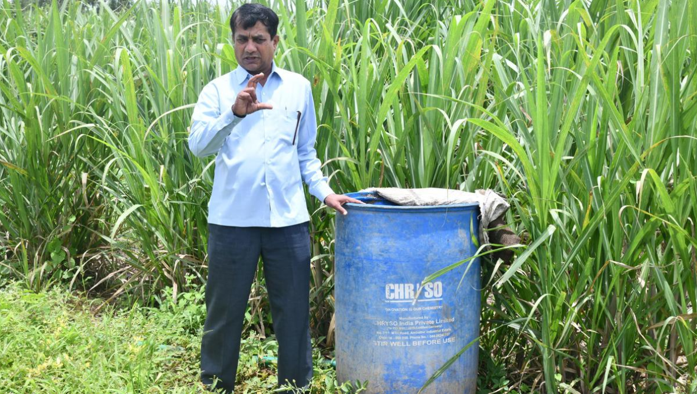

जैविक खेती की एक सरल लेकिन अत्यंत सफल कहानी
कर्नाटक के बेलगावी जिले के होनिहाल गांव के प्रकाश ऑर्गेनिक ने अपने लिए एक अलग बाजार बनाया है। अनुराधा कुलकर्णी जोर देती हैं कि होनिहाल गांव में उनके पारिवारिक खेत का दौरा करने से पहले आगंतुकों को चाय पीनी चाहिए। एक बार जब वे चाय की चुस्की लेते हैं, तो उन्हें समझ में आ जाता है कि ऐसा क्यों किया जाता है। यह उनके पिछवाड़े के गण, गुड़ के पौधे में उत्पादित जैविक गुड़ से बनाया जाता है, और निश्चित रूप से, गाढ़ा दूध मवेशियों के बाड़े में भैंसों से आता है।
खेत के बीच में कुलकर्णी दंपत्ति का साधारण घर जैविक किसानों के रूप में उनकी सफलता को नहीं दर्शाता है। पिछले कुछ वर्षों में, प्रकाश ऑर्गेनिक्स ने अपना खुद का ब्रांड और जैविक खाद्य पदार्थों में एक विशिष्ट बाजार बनाया है। यह हर साल 10 टन से अधिक जैविक गुड़ बेचता है, इसके अलावा कोल्ड प्रेस हल्दी पाउडर और पेस्ट, बेलगाम बासमती नामक स्थानीय सुगंधित चावल, बिना पॉलिश किए हुए सोना मसूरी चावल और सोयाबीन, और कुछ फल और सब्जियाँ भी बेचता है।
“हमारी सफलता का सूत्र सरल है। जैविक खेती अपनाएँ, गुणवत्तापूर्ण उत्पाद बनाएँ और अपना खुद का ब्रांड बनाएँ जिस पर उपभोक्ता भरोसा करें। बस इतना ही,'' ब्रांड के पीछे के किसान प्रकाश कुलकर्णी बताते हैं।

प्रकाश कुलकर्णी बेलगावी जिले के होन्निहाल गांव में अपने खेत में गोकृपामृत जीवाणु कल्चर से भरे ड्रम के पास खड़े हैं।
हालांकि, यह एक दिन में नहीं बना। प्रकाश कुलकर्णी को हाई स्कूल में ही पढ़ाई छोड़नी पड़ी और पूर्णकालिक किसान बनना पड़ा। 20 से ज़्यादा सालों तक उन्होंने अकार्बनिक खेती की। उन्होंने कहा, "फिर एक दिन मेरे दोस्तों ने यमकनमराडी गांव में प्राकृतिक खेती के समर्थक सुभाष पालेकर की कार्यशाला आयोजित की। मैंने दिन भर चले कार्यक्रम में हिस्सा लिया और मैं इससे जुड़ गया।"
शुभचिंतकों और दोस्तों से निराशाजनक प्रतिक्रिया के बावजूद, उन्होंने जैविक खेती अपनाने का फैसला किया। अपने 20 एकड़ के खेत में जैविक तरीके अपनाने में उन्हें तीन साल लग गए। जिले के एक साथी जैविक किसान ने मिलकर एक जैविक किसान क्लब बनाया। कुछ सालों तक, क्लब ने कार्यशालाएँ आयोजित कीं और एक साझा बाज़ार स्थापित किया। लेकिन लॉकडाउन के दौरान इसकी गति धीमी पड़ गई।
"जैविक खेती हाल ही में प्रचलन में आई है। लेकिन हम इसे अपनाने वाले पहले व्यक्ति थे। मेरी खेती जैविक खेती के लिए बिना किसी तामझाम के है। मेरे ज़्यादातर इनपुट खेत पर ही बनाए जाते हैं," प्रकाश कुलकर्णी कहते हैं। बाहर से उन्हें सिर्फ़ 30 ट्रैक्टर खाद, बीज या विश्वविद्यालयों या आविष्कारकों द्वारा विकसित पौधे और निश्चित रूप से बंसी गिर गोशाला के गोपालभाई सुतारिया द्वारा विकसित गोकृपामृत जीवाणु संस्कृति ही मिलती है।
"गोकृपामृत संस्कृति को छाछ और गुड़ के साथ मिलाकर पानी से पतला किया जाता है। इसका उपयोग चार साल तक मिट्टी की उर्वरता में किया जाता है, उसके बाद संस्कृति को नए सिरे से खरीदा जाता है," किसान बताते हैं। उनके अनुसार, श्री पालेकर द्वारा बताए गए जीवामृत की तुलना में इसे तैयार करना आसान है।
अनुराधा कुलकर्णी कहती हैं, "शुरुआती साल मुश्किल भरे थे।" "हम घर-घर जाकर लोगों को बताते थे कि हमारे उत्पाद बाज़ार में मिलने वाले उत्पादों से ज़्यादा फ़ायदेमंद हैं। हमें छोटे-छोटे पैकेट बनाकर कुछ मुफ़्त सैंपल देने पड़ते थे और रोज़ाना खाना बनाने में उनके इस्तेमाल के बारे में बताना पड़ता था। लेकिन अब हमारा ब्रैंड स्थापित हो चुका है। लोग हमारे दरवाज़े पर आकर हमारे उत्पाद मांगते हैं," उन्होंने कहा।
गुड़ को ब्लॉक, दाने और पाउडर के रूप में बनाया जाता है। लेकिन पाउडर की बिक्री सबसे ज़्यादा होती है। वह बताती हैं, "घरेलू महिलाएं इसे इसलिए पसंद करती हैं क्योंकि इसे मापा जा सकता है और चीनी की तरह इस्तेमाल किया जा सकता है।"
उन्होंने कहा, "हमारे सभी उत्पाद जैविक तरीके से बनाए जाते हैं। हम अकार्बनिक उर्वरक, कीटनाशक या खरपतवार नाशक का उपयोग नहीं करते हैं। हमने 15 साल पहले राष्ट्रीय और अंतर्राष्ट्रीय प्रमाणपत्र प्राप्त किए थे। हमारे पास अधिकारियों द्वारा नियमित निरीक्षण होते हैं। इसके अलावा, कोई भी व्यक्ति हमारे खेत पर आकर खुद ही इसकी जानकारी ले सकता है।"
प्रकाश कुलकर्णी ने अपने घर के एक हिस्से को गुड़, हल्दी पाउडर और चावल रखने के लिए गोदाम में बदल दिया है। एक दशक से भी ज़्यादा समय से वे अपने दोस्त के खेत में गन्ना पीसकर गुड़ बनाते रहे हैं। लेकिन पिछले कुछ सालों में उन्होंने अपने खेत में ही गुड़ बनाने के लिए एक पारंपरिक एलेमेन या बॉयलर बनाया है। प्रकाश कुलकर्णी कहते हैं, "हमें एहसास हुआ कि किसान तभी सफल हो सकता है जब वह अंतिम उत्पाद बनाकर सीधे उपभोक्ताओं को बेचे। हम अब बिचौलियों पर निर्भर नहीं रह सकते।"
.png)